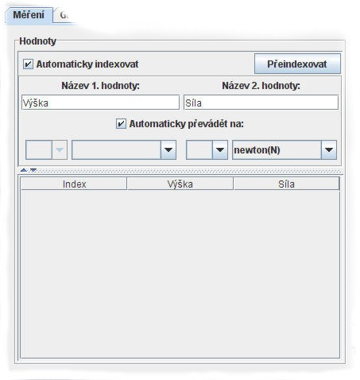

V této části okna se zobrazují naměřené hodnoty a rovněž zde lze změnit základní nastavení, týkající se bezprostředně měření hodnot.

Zde lze nastavit, zda program bude naměřeným hodnotám přidělovat pořadové
číslo, nebo zda se převezme pořadové číslo vytvořené měřidlem (pokud takové číslo
existuje). Hodnoty se indexují vždy od 1 nahoru. S každým spuštěním měření
pomocí tlačítka Start se počítadlo nastaví opět na 1.
Po zmáčknutí tohoto tlačítka se všem hodnotám nastaví znovu index tak, jak jsou zapsány v tabulce. Prvnímu záznamu je přidělen index 1 a každý následující záznam má index o jedno vyšší. Záznamy tabulky, které nereprezentují naměřenou hodnotu jsou ignorovány.
Zde lze zapsat název hodnot v sloupcích tabulky. Tyto názvy jsou použity pro vytvoření popisu os grafu hodnot a v protokolu o měření.
Zde lze nastavit, zda se mají naměřené hodnoty okamžitě po načtení z měřidla převést na jednotky zvolené pod tímto zaškrtávacím polem, nebo se mají ponechat v jednotkách, ve kterých byly načteny z měřidla.